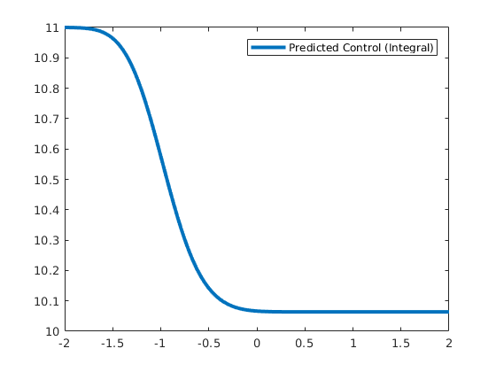

clear
V=@(x) 1/2.*(x.^2-1).^2;
gradV = @(x) 2*x.*(x.^2-1);
dt = 0.01;
sdt = sqrt(dt);
beta = 2;
sigma = sqrt(2/beta);
xzero=-1;
nvs = 1;
ntrjs = 20;
opt_steps=1;
nsteps = 150;
n_pred=100;
sk= 0.01;
l= 0.2;
pathfunc = ones(ntrjs,1);
trajlength = zeros(ntrjs+1,1);
c_old = zeros(opt_steps,n_pred);
time = zeros(ntrjs,1);
c_pred=0;
bias=0;
for opt = 1:opt_steps
time=zeros(1,ntrjs);
X = [];
gV= [];
X(1)=xzero;
costfunc = zeros(1,ntrjs);
trajlength = ones(ntrjs+1,1);
Is = 0;
Id = 0;
j=1;
for i = 1:ntrjs
x = xzero;
t=0;
cost=0;
while (x<0)
j=j+1;
t=t+1;
eta=randn(1);
if opt==1
x = x + (- gradV(x)+bias) * dt + eta * sigma*sdt;
else
K_p = sk.*exp(-0.5*(data'-x).^2/l.^2);
bias = -K_p' *c_prior;
x = x + (-gradV(x)+bias)*dt + eta * sigma*sdt;
end
X(j) = x;
cost=cost+bias*bias*dt;
Is = Is - bias * eta/ sigma * sdt;
Id = Id - bias.^2 / sigma^2 *dt;
end
time(i)=t;
pathfunc(i)=exp(-1/beta*t*dt)*exp(Is+0.5*Id);
costfunc(i)=1/4 * cost;
trajlength(i+1) = trajlength(i)+t;
end
data=X;
K=zeros(length(data),length(data));
pathweight=zeros(length(data),1);
for k=1:ntrjs
pathweight(trajlength(k):trajlength(k+1))= pathfunc(k);
end
for j=1:length(data)
K(j,:) = sk.*exp(-0.5*(data'-data(j)).^2/l.^2);
end
K= K + 1e-10*speye(length(data),length(data));
obs = (pathweight*dt)./(2/beta).*(data');
c_prior = (inv(K) + (pathweight*dt)./(2/beta).*speye(length(data),length(data))) \ obs;
x_pred = linspace(-2,2,n_pred);
K_pred = zeros(length(x_pred),length(data));
for j=1:length(x_pred)
K_pred(j,:) = sk.*exp(-0.5*(data'-x_pred(j)).^2/l.^2);
end
c_pred = - K_pred * c_prior;
figure(opt)
plot(x_pred,c_pred)
p=mean(time*dt);
fprintf('Mean average hitting time %f \n', p )
fprintf('Var(time) %f \n', var(time*dt))
fprintf('Mean average pathfunctional %f \n', mean(pathfunc) )
fprintf('Variance pathfunctional %f \n', var(pathfunc))
end
Mean average hitting time 2.841000
Var(time) 4.215304
Mean average pathfunctional 0.359785
Variance pathfunctional 0.073786

figure(1)
plot(x_pred, c_pred,'LineWidth',3)
title('Control')
figure(6)
plot(x_pred, -gradV(x_pred),x_pred, c_pred' -gradV(x_pred),'LineWidth',3 );
legend('-gradV','-gradV+cPred')
title('Gradients')
dx=x_pred(2)-x_pred(1);
per_pot = zeros(1,n_pred+1);
control = zeros(1,n_pred+1);
c_predh =zeros(1,n_pred+1);
c_predh(2:end)= c_pred;
for i=2:n_pred+1
per_pot(i) = per_pot(i-1) + (-c_predh(i-1)' + gradV(x_pred(i-1)) )*dx;
control(i) = control(i-1) -c_predh(i-1)*dx;
end
figure(8)
plot(x_pred,V(x_pred),x_pred,V(x_pred)+control(2:end)+1.1,'LineWidth',3);
legend('Potential','Perturbed Potential')
figure(9)
plot(x_pred,control(2:end)+11,'LineWidth',3);
legend('Predicted Control (Integral)')
